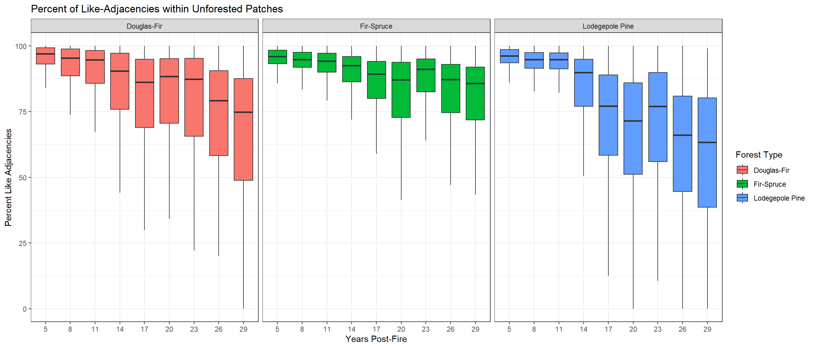

Part 14 Landscape Expansion
14.1 Set Up
14.1.1 Import Libraries
library(sf)
library(terra)
library(mapview)
library(raster)
library(tidyverse)
library(ggplot2)
library(landscapemetrics)
library(gridExtra)14.1.2 Import Patch Polygons
# fire list
fire_list <- c("Fire_54_1991","Fire_4_1988","Fire_7_1988","Fire_9_1988","Fire_10_1988","Fire_11_1988","Fire_12_1988","Fire_13_1988","Fire_14_1988","Fire_15_1988","Fire_16_1988","Fire_18_1988","Fire_19_1988","Fire_20_1988","Fire_22_1988","Fire_23_1988","Fire_25_1988","Fire_26_1988","Fire_28_1988","Fire_29_1988","Fire_31_1988","Fire_32_1989","Fire_33_1989","Fire_35_1989","Fire_38_1989","Fire_41_1989","Fire_42_1989","Fire_48_1990","Fire_49_1991","Fire_50_1991","Fire_51_1991","Fire_1_1988","Fire_2_1988","Fire_3_1988")
# import high-severity patches
patches <- st_read("data/patches/highsev_patches.shp") %>%
mutate(Patch_ID = str_c(Fire_ID,"-",1:n())) %>%
st_transform(crs = "EPSG:4326")## Reading layer `highsev_patches' from data source
## `G:\Other computers\My Laptop\Documents\Grad School\Research\ConiferRegeneration\data\patches\highsev_patches.shp'
## using driver `ESRI Shapefile'
## Simple feature collection with 5904 features and 10 fields
## Geometry type: POLYGON
## Dimension: XY
## Bounding box: xmin: -118.6156 ymin: 42.57637 xmax: -106.96 ymax: 48.92836
## Geodetic CRS: WGS 84# patch metrics
patch_metrics <- read_csv("data/patches/patch_metrics.csv")14.2 Calculate Landscape Patterns
14.2.1 Create Functions
calc_lsm <- function(fire_name){
# print patch ID
print(fire_name)
# filter to this specific patch
patches_fire <- patches %>%
filter(Fire_ID == fire_name)
# import and name rasters for that fire
rast_list <- list.files(path = "data/prediction_rasters", pattern = str_c(fire_name,"_rf"), all.files=TRUE, full.names=TRUE)
rast_names <- str_sub(rast_list,start = -6, end = -5)
rast_fire <- rast(rast_list) %>%
as.factor()%>%
terra::project(.,"EPSG: 3857")
names(rast_fire) <- rast_names
lsm_patchlist <- lapply(unique(patches_fire$Patch_ID),get_patchlsm,patches_fire=patches_fire,rast_fire=rast_fire)
lsm_df <- do.call(rbind,lsm_patchlist)
write_csv(lsm_df,str_c("data/lsm/",fire_name,".csv"))
}get_patchlsm <- function(patch_name,patches_fire,rast_fire){
print(patch_name)
patch <- patches_fire %>%
filter(Patch_ID==patch_name)%>%
st_transform(crs = "EPSG: 3857")
cropped_rast <- crop(rast_fire,patch)
masked_rast <- mask(cropped_rast,patch)
if(all(is.na(values(masked_rast))) == FALSE){
patch_lsm <- calculate_lsm(masked_rast,
what = c("lsm_c_pland","lsm_c_ca","lsm_c_tca","lsm_c_pladj","lsm_c_ed"),
count_boundary=TRUE,
consider_boundary = TRUE,
edge_depth = 3) %>%
mutate(Patch_ID = patch_name,
ptch_fr=patch$ptch_fr,
value = round(value,3))
return(patch_lsm)
} else {masked_rast
print("empty")
}
}14.3 Assess LSM Patterns
14.3.1 Prepare Data
# combine lsm csvs
lsm_big <- lapply(list.files(path = "data/lsm", pattern = str_c("Fire"), all.files=TRUE, full.names=TRUE),read_csv) %>%
do.call(rbind,.) %>%
mutate(timepoint = str_c("t",layer),
condition = case_when(class == 1 ~ "unforested",
TRUE ~ "forested")) %>%
dplyr::select(Patch_ID, ptch_fr,timepoint,condition,metric,value)
# clean up dataframe
lsm_df <- lsm_big %>%
filter(Patch_ID != "empty",
timepoint != "t1") %>%
pivot_wider(names_from = metric,values_from = value,values_fn = as.numeric) %>%
rename(core_area = tca,
total_area = ca,
edge_area_ratio = ed,
perc_like_adj = pladj,
perc_area = pland) %>%
mutate(perc_core = round(core_area/total_area,4)*100,
time_yr = as.factor(case_when( timepoint == "t2" ~ 5,
timepoint == "t3" ~ 8,
timepoint == "t4" ~ 11,
timepoint == "t5" ~ 14,
timepoint == "t6" ~ 17,
timepoint == "t7" ~ 20,
timepoint == "t8" ~ 23,
timepoint == "t9" ~ 26,
timepoint == "t10" ~ 29)))
forested_df <- lsm_df %>%
filter(condition == "forested")
unforested_df <- lsm_df %>%
filter(condition == "unforested")14.3.2 Percent of Land Area
forested_df_sum <- forested_df %>%
group_by(ptch_fr,time_yr) %>%
summarize(perc_area = median(perc_area,na.rm = TRUE))
pland_df <- ggplot(forested_df %>% filter(ptch_fr=="Douglas-Fir"),aes(time_yr,perc_area)) +
geom_boxplot(outlier.shape = NA,fill = "#F8766D") +
geom_smooth(data=forested_df_sum%>% filter(ptch_fr=="Douglas-Fir"), aes(as.numeric(time_yr),perc_area), linetype = "dashed",color = "black",na.rm = TRUE)+
labs(x="Years Post-Fire",fill="Forest Type",y=NULL) +
theme_classic() +
scale_y_continuous(breaks = c(0,20,40,60,80,100),limits = c(-10,110))
pland_lp <-ggplot(forested_df %>% filter(ptch_fr=="Lodegepole Pine"),aes(time_yr,perc_area)) +
geom_boxplot(outlier.shape = NA,fill ="#619CFF") +
geom_smooth(data=forested_df_sum%>% filter(ptch_fr=="Lodegepole Pine"), aes(as.numeric(time_yr),perc_area,ymin =0,ymax=100), linetype = "dashed",color = "black",na.rm = TRUE) +
labs(x="Years Post-Fire",fill="Forest Type",y=NULL) +
theme_classic() +
scale_y_continuous(breaks = c(0,20,40,60,80,100),limits = c(-10,110))
pland_fs <- ggplot(forested_df %>% filter(ptch_fr=="Fir-Spruce"),aes(time_yr,perc_area)) +
geom_boxplot(outlier.shape = NA,fill = "#00BA38") +
geom_smooth(data=forested_df_sum%>% filter(ptch_fr=="Fir-Spruce"), aes(as.numeric(time_yr),perc_area), linetype = "dashed",color = "black",na.rm = TRUE)+
labs(x="Years Post-Fire",fill="Forest Type",y=NULL) + #title = "Fir-Spruce",y = "Percent of Patch Occupied by Conifers",
theme_classic() +
scale_y_continuous(breaks = c(0,20,40,60,80,100),limits = c(-10,110))
grid.arrange(pland_df,pland_lp,pland_fs,ncol=3, left = "Percent of Patch Occupied by Conifers",top = "Conifer Patch Occupancy 30-Years Post-Fire")
14.3.3 Percent Alike Adjacencies
# unfor_metric <- unforested_df %>%
# left_join(.,patch_metrics,by = c("Patch_ID","ptch_fr"))%>%
# mutate(core_type = case_when (perc_core.y > 0.25 ~ "high core (>25%)",
# perc_core.y > 0.0 & perc_core.y <0.25 ~ "medium core (<25%)",
# TRUE ~ "no core (0%)")) %>%
# group_by(ptch_fr,time_yr) %>%
# summarize(metric = mean(perc_core.y,na.rm=FALSE)) %>%
# filter(ptch_fr %in% c("Douglas-Fir","Fir-Spruce","Lodegepole Pine"))
ggplot(unforested_df %>%
filter(ptch_fr %in% c("Douglas-Fir","Fir-Spruce","Lodegepole Pine")),aes(as.factor(time_yr),perc_like_adj,fill = ptch_fr)) +
geom_boxplot(outlier.shape = NA) +
facet_wrap(~ptch_fr) +
theme_bw() +
labs(fill = "Forest Type",x="Years Post-Fire",y = "Percent Like Adjacencies",title = "Percent of Like-Adjacencies within Unforested Patches") 